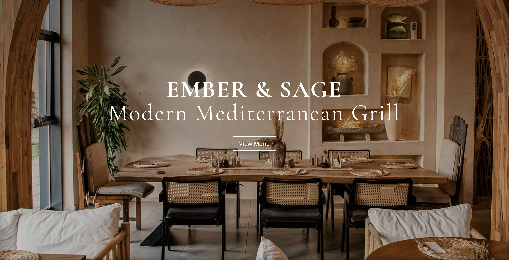
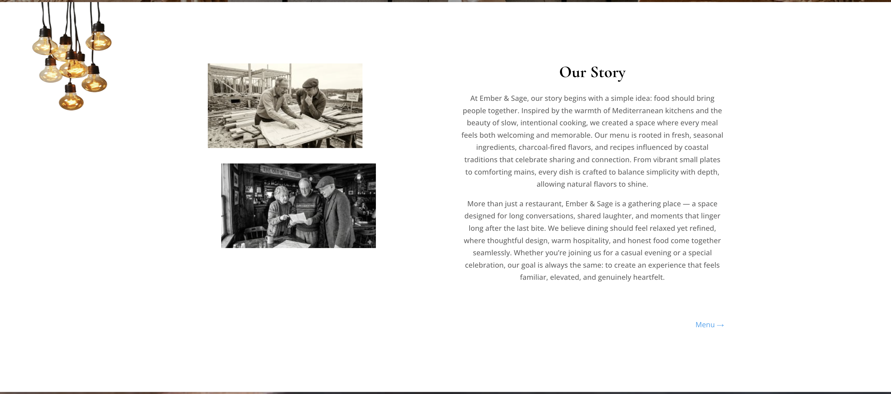
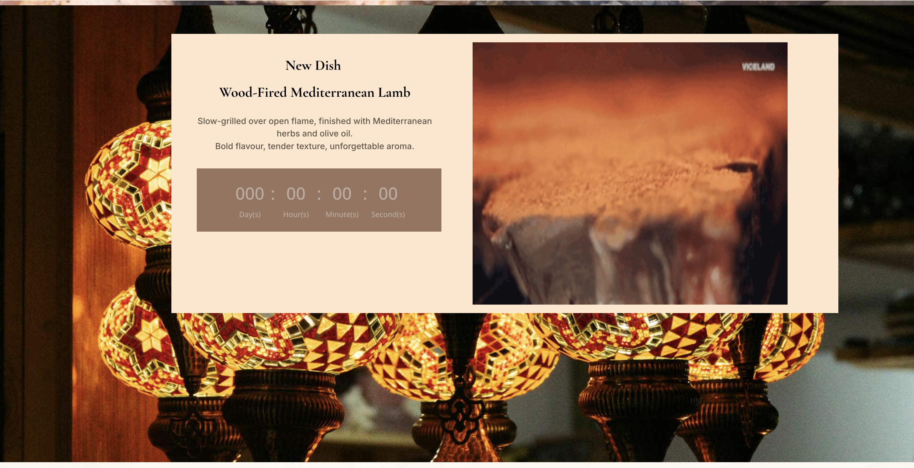
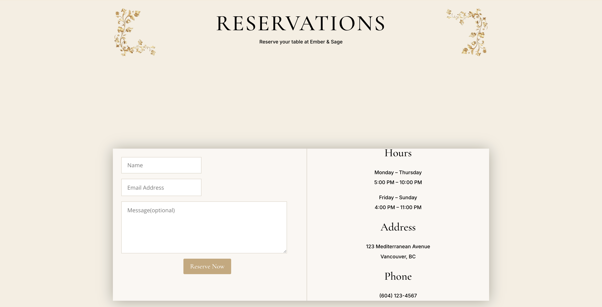
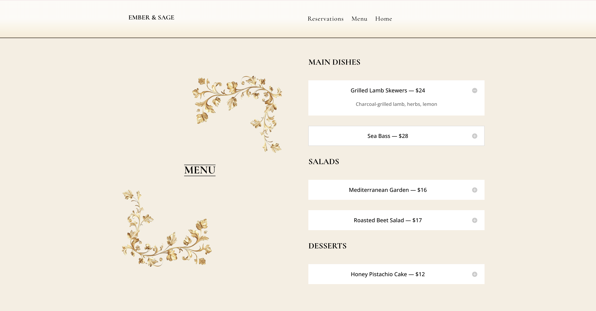

PROJECT 1
Ember & Sage Website
A WordPress restaurant website designed to feel warm, elegant, and easy to navigate across desktop, tablet, and mobile. Built for a client-facing restaurant brief, the project focused on clear brand application, responsive layout, and a more polished user experience.

Project Overview
Designing a restaurant site that feels warm, elevated, and usable
This project was created for a WordPress restaurant brief where the goal was to design and build a responsive client-facing website using Divi’s core modules. The final site needed to communicate a clear visual identity, present content cleanly, and work smoothly across desktop, tablet, and mobile.
I developed Ember & Sage as a modern Mediterranean restaurant concept, with an emphasis on earthy tones, elegant typography, and imagery that helped create a welcoming dining atmosphere.


Goal
Translate a simple brand identity into a complete responsive website
The project brief asked for a simple but consistent brand identity, clear typographic hierarchy, optimized imagery, and a responsive layout built with WordPress and Divi. The website also needed core pages such as Home, About, Menu, and Reservations.
My goal was to make the site feel more refined than a generic restaurant template by giving it a softer editorial quality while still keeping navigation straightforward and readable for users.

What Worked Well
Strong mood, clear imagery, and an easy-to-follow structure
One of the strongest parts of this project was the way the visuals supported the restaurant’s atmosphere. The imagery, warm tones, and serif typography helped the site feel cohesive and on-brand.
The content was also presented clearly, with users able to move between menu, reservations, and general information without feeling overwhelmed. This gave the project a more polished and professional feel overall.

Feedback & Reflection
Good foundation, with room to strengthen technical polish
Feedback on the project suggested that the website communicated the restaurant’s mood successfully and that the imagery and content choices supported a strong user experience. At the same time, there were a few areas where the build could have been improved further.
In particular, mobile navigation could have been stronger, and some smaller polish details, such as link clarity and refinement across responsive views, needed more attention. Looking back, this project taught me that strong visual direction matters, but the final layer of usability and consistency is what really pushes a website from good to excellent.
This project helped me understand how brand, layout, and technical execution need to work together — not just to make a site look good, but to make it feel dependable and complete.